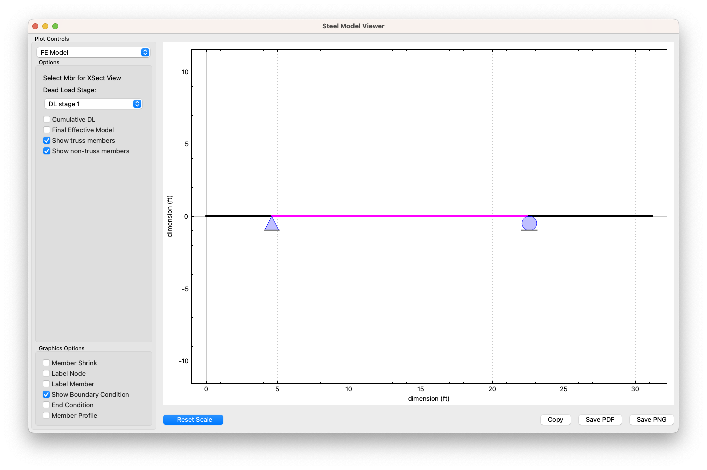

Conducting another transverse analysis
Description
This example duplicates Bridge 5: 31-36-FB
Type |
Floor Beam - Transverse Analysis |
Structure |
Steel |
Description |
|
Input file |
Keywords
Source(s)
Input file: ValidationSet/31-36-FB
WSDOT Bridge Design Manual, Chapter 13:
https://wsdot.wa.gov/publications/manuals/fulltext/M23-50/Chapter13.pdfAASHTO (2024): “LRFD Bridge Design Specifications for use in the design, evaluation, and rehabilitation of bridges”, 10th Edition.
Approach
Describe your solution approach

Tips & Tricks
Watch out for …
Avoid …
Try this …